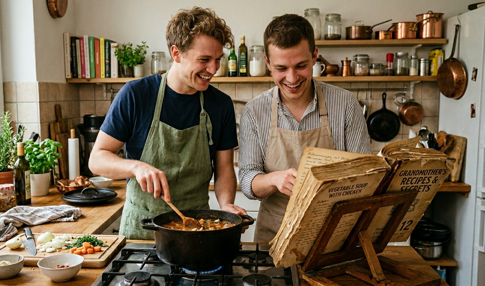
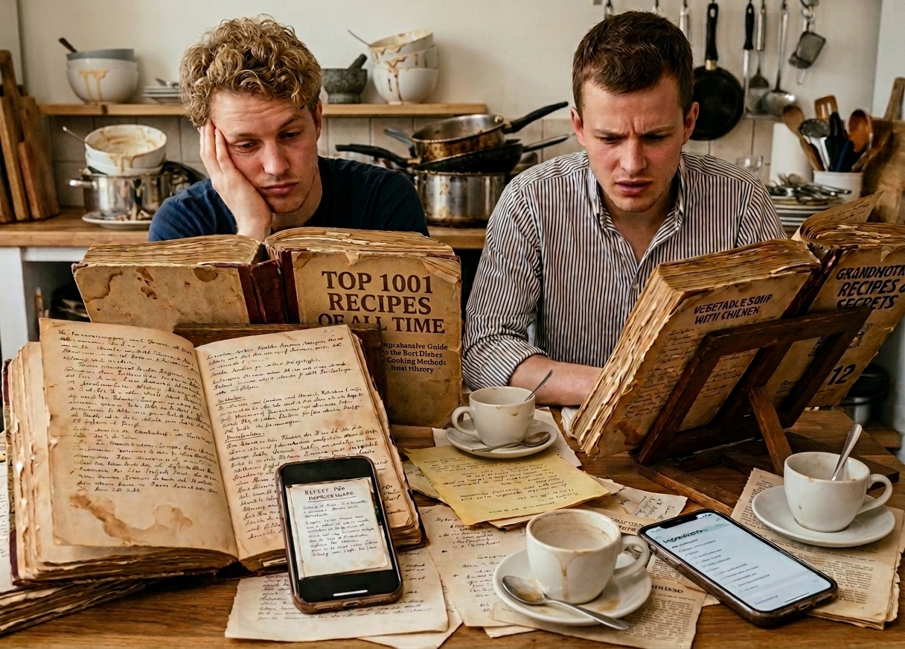
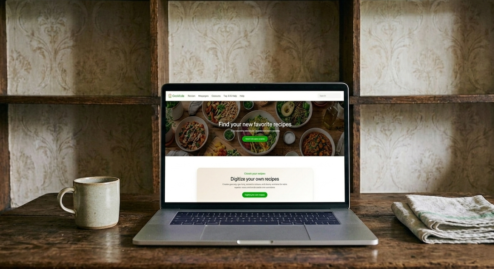
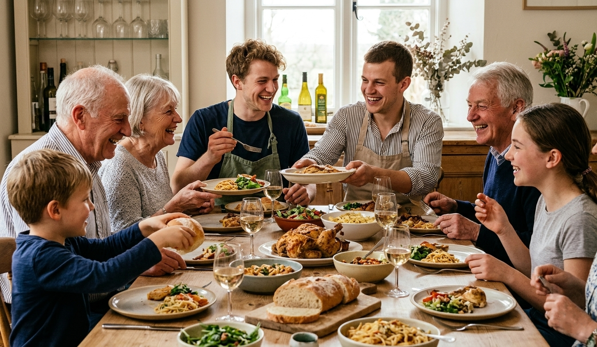

About us
Cookit.de started with a simple problem and a shared passion: two friends who loved cooking, trying new recipes, and preparing meals together, but who slowly realized that finding and sharing recipes was becoming more complicated than it needed to be.
What began as a hobby in the kitchen soon became the idea for a place where recipes could be saved, shared, and discovered more easily.

How it all started
The idea for Cookit.de came from two boys who both enjoyed cooking in their free time. They loved testing new dishes, improving old family recipes, and surprising friends with homemade food. But every time they wanted to cook together, the same problem appeared: the recipes were everywhere.
Some were hidden in old cookbooks, others were written on loose pieces of paper, and many were saved as pictures on their phones. Before meeting up, they often had to send each other photos of cookbook pages, screenshots, ingredient lists, or notes from previous cooking sessions. It worked, but it was messy, confusing, and easy to lose track of.

The problem with too many cookbooks
Over time, their collection of cookbooks grew bigger and bigger. While that sounds great for people who love cooking, it also made recipe planning harder. Finding one specific recipe could take longer than actually preparing the meal. If one of them had a good recipe at home, the other one could not easily access it.
They wanted a better solution: one place where they could collect their favorite recipes, organize them, and quickly share them before cooking together.
The idea behind Cookit.de
That is how Cookit.de was born. Instead of sending photos back and forth, they decided to create a website where recipes could be added, saved, searched, and shared. The goal was not only to make cooking easier for themselves, but also to build a platform that other people could use too.
Cookit.de is meant to be a digital recipe collection for everyone: simple enough for everyday cooking, useful enough for planning meals, and open enough to discover new ideas from others.

What Cookit.de stands for
We believe that good food should be easy to share. A recipe is more than just a list of ingredients — it is a memory, an idea, and sometimes even a tradition. With Cookit.de, we want to make it easier to keep those recipes in one place and make them available whenever they are needed.
Whether you are looking for inspiration, saving your favorite meals, or adding your own recipe, Cookit.de is built to help you enjoy cooking without the chaos of scattered notes, screenshots, and cookbook pages.
